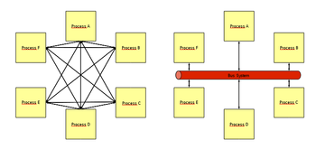

D-Bus
Dieser Artikel wurde für die folgenden Ubuntu-Versionen getestet:
Dieser Artikel ist größtenteils für alle Ubuntu-Versionen gültig.
Zum Verständnis dieses Artikels sind folgende Seiten hilfreich:
 D-Bus
D-Bus  ist ein Framework für die Interprozesskommunikation (IPC) und bietet einen Kommunikations-Kanal zwischen verschiedenen Programmen auf dem System bzw. der Arbeitsoberfläche an. Dies ermöglicht einen generischen Prozess-Datenaustausch bspw. zwischen Helfer-Applikationen auf der Desktop-Oberfläche und/oder auch ganzen Anwendungen. Beispielsweise wird ein im System eingesteckter USB-Stick an andere Applikationen (bspw. allen Dateimanagern) als verfügbare Ressource gemeldet. Dieser USB-Stick steht dann plötzlich im Dateimanager zur Verfügung, ohne dass seitens des Benutzers eine Aktion notwendig gewesen wäre. D-Bus wird daher bei IPC-Frameworks wie RPC, CORBA oder DCOM angesiedelt.
ist ein Framework für die Interprozesskommunikation (IPC) und bietet einen Kommunikations-Kanal zwischen verschiedenen Programmen auf dem System bzw. der Arbeitsoberfläche an. Dies ermöglicht einen generischen Prozess-Datenaustausch bspw. zwischen Helfer-Applikationen auf der Desktop-Oberfläche und/oder auch ganzen Anwendungen. Beispielsweise wird ein im System eingesteckter USB-Stick an andere Applikationen (bspw. allen Dateimanagern) als verfügbare Ressource gemeldet. Dieser USB-Stick steht dann plötzlich im Dateimanager zur Verfügung, ohne dass seitens des Benutzers eine Aktion notwendig gewesen wäre. D-Bus wird daher bei IPC-Frameworks wie RPC, CORBA oder DCOM angesiedelt.
Als Endanwender kommt man mit dem D-Bus nicht in Berührung, es muss nichts konfiguriert werden, alles läuft transparent im Hintergrund. Dieser Artikel dient Entwicklern und hilft bei der Fehlersuche.
Aufbau¶
|  |
| Prozess-Kommunikation: Punkt-zu-Punkt Architektur (links) vs. Bus-System (rechts) |
Die Architektur basiert auf einem Bus-System für die Kommunikation, also einem Dienst, an dem sich jedes Programm (bei D-Bus: Objekte bzw. Proxies) anmeldet und selbst bestimmte Funktionen (bei D-Bus: Methoden) anbietet, von anderen Prozessen nutzt oder auf Trigger (bei D-Bus: Signale) wartet. Gegenüber Punkt-zu-Punkt-Architekturen hat dieses Bus-System den Vorteil, dass es unabhängig vom Kommunikationspartner eine einheitliche API für diese Kommunikation gibt und bei einem zusätzlichen Prozess keine Anpassungen an alle vorhandenen Systeme gibt (siehe Abbildung). Neben diesem Bus-System beinhaltet D-Bus jedoch auch Punkt-zu-Punkt-Kommunikation zwischen den Prozessen. D-Bus wird derzeit von vielen Applikationen und Applets unter den beiden großen Arbeitsoberflächen KDE und GNOME genutzt.
Pakete¶
Die D-Bus Komponenten sind in folgenden Paketen enthalten, die mit einer grafischen Oberfläche wie KDE oder GNOME bereits installiert sind:
dbus (enthält die gesamte Bus-Umgebung)
dbus-x11 (bietet die Schnittstelle zum Desktop)
 mit apturl
mit apturl
Paketliste zum Kopieren:
sudo apt-get install dbus dbus-x11
sudo aptitude install dbus dbus-x11
Betrieb¶
Es laufen üblicherweise (mindestens) zwei Bus-Daemons.
pgrep -lf dbus
Sockets für die interne Kommunikation werden dargestellt mit
netstat -an | grep dbus
Session-Bus & System-Bus¶
Der Session-Bus bietet einen Kommunikationskanal für alle Programme und Desktop-Helfer, die direkt auf der Oberfläche Daten austauschen, wie beispielsweise Ausschneiden und Kopieren von beliebigen Textpassagen, die Klipper (in der KDE Umgebung) gemeldet werden und so allen anderen Programmen zur Verfügung stehen können. Der Session-Bus wird durch das Programm dbus-launch mit Referenz auf die grafische Oberfläche gestartet und steht nur diesem angemeldeten Benutzer zur Verfügung.
Der System-Bus hingegen meldet Ereignisse oder Status im System wie zum Beispiel das Erscheinen eines neuen Gerätes, das sofort vom Dateimanager in seine Oberfläche als weitere Daten-Ressource eingebunden wird. Diese Meldung erfolgt an alle eingeloggten Benutzer. Gestartet wird der Prozess dbus als User messagebus (ID 102) mit einem Upstart-Script, das ebenfalls dbus-launch aufruft.
Die Konfiguration der Busse (busconfig) ist in den XML-Dateien /etc/dbus-1/system.conf bzw. /etc/dbus-1/session.conf hinterlegt.
Objekt-Modell¶
Objects¶
Ein Ende der Kommunikations-Kette in D-Bus wird "Object" (Objekt) genannt. Ein Objekt wird vom Client erstellt und besteht, solange die Client-Anwendung mit dem Bus in diesem Kontext verbunden ist. Ein Client kann mehrere Verbindungen zum D-Bus betreiben.
Jede Meldung, die über den Bus geht, kann einer der folgenden Typen sein:
eine Anfrage vom Client-Prozess an andere Objekte (von anderen Prozessen)
eine Antwort auf eine Anfrage, die zum ursprünglichen Objekt zurück geht
einmalige Meldungen an alle verbundenen Objekte, die auf bestimmte Meldungen warten (Broadcast)
Proxies¶
"Proxies" kapseln Objekte, um ihnen die Programmierung oder die Kommunikation zu erleichtern oder komplexe Funktionen abzunehmen, die mit einzelnen Objekten nicht einfach zu realisieren wäre (bspw. Failover-Funktionen).
Methods¶
Jede Anfrage an ein Objekt ist der Aufruf einer "Method" (Methode) des Objekts; das Objekt soll eine bestimmte Aktion ausführen. Jede Methode kann Parameter für die Ausführung als Argumente benötigen, kann aber auch die Ergebnis-Daten mit der Antwort schicken oder, wenn die Anfrage nicht ausgeführt werden kann, einen Fehler ausgeben.
Signals¶
Signale ("signals") werden von einem Objekt an alle anderen Objekte geschickt, die ein bestimmtes Signal abonniert haben und darauf warten. Es gibt eigentlich keine Antworten auf solche Signale. Signale können ebenfalls Parameter beinhalten.
Interfaces¶
Jedes Objekt unterstützt bestimmte Methoden und kann bestimmte Signale senden. Diese sind bekannt als die Mitglieder ("members") der Objekte. Alle Objekt-Mitglieder sind zusammengefasst in "Interfaces" (Schnittstellen).
Adressierung¶
| D-Bus Komponenten | |||
| Ein/e | wird identifiziert als | das wie folgt aussieht | und wird konfiguriert von |
| Bus | Adresse | unix:path=/var/run/dbus/system_bus_socket | Systemkonfiguration |
| Verbindung | Busname | :34-907 (eindeutig) oder com.domain.App (lesbar) | D-Bus oder Anwendung |
| Objekt | Pfad | /com/domain/App | der Anwendung |
| Interface | Interface Name | com.domain.App.Funktion | der Anwendung |
| Mitglied | member Name | ListNames | der Anwendung |
Das D-Bus System besteht aus drei Komponenten:
Dem eigentlichen D-Bus-Daemon, der als Hintergrundprozess läuft. D-Bus ist (derzeit) nur ein lokaler Bus, alle Clients (Applikationen) müssen auf demselben Rechner laufen. D-Bus Verbindungen über SSH sind prinzipiell möglich, aber derzeit noch nicht vorgesehen.
Der API, der Schnittstelle zwischen der Applikation und dem Kommunikationskanal. libdbus ist als Referenzimplementierung vorhanden, es gibt aber auch andere Implementierungen. Für libdbus gibt es eine Anzahl von High-Level Bindings in verschiedenen Programmiersprachen, um die Integration zu erleichtern.
Dem Netzwerk-Protokoll der Kommunikation. Das Protokoll ist binär und tauscht vorwiegend Metadaten (Status, Adressen für KDEPIM, etc.) zwischen Programmen aus, ist also nicht für Datentransfer ausgelegt.
Untersuchung¶
Mit qdbus können die Methoden der einzelnen Objekte und Interfaces abgefragt werden und auch selbst gesendet werden: Dieses Kommando gibt alle verfügbaren D-Busse aus:
qdbus
Dieses Kommando gibt die Objekte des Interfaces org.kde.klipper aus. Klipper ist KDEs Zwischenablage.
qdbus org.kde.klipper
Die Methoden (und Signale) des Objektes werden ausgegeben mit:
qdbus org.kde.klipper /klipper
Die Methode getClipboardContents gibt nun den Inhalt der Zwischenablage aus:
qdbus org.kde.klipper /klipper getClipboardContents
Grafisch übernimmt das Programm qdbusviewer (aus dem Paket qt4-dev-tools) diese Funktionalität.
Aktionen auf dem D-Bus können mit dem Terminal-Programm
dbus-monitor
verfolgt werden. Die umfangreiche (!) Ausgabe erfolgt auf dem Terminal.
Grafische Tools zur Überwachung des D-Busses sind bustle und D-Feet.
Mit dem Kommando
dbus-send
können eigene Meldungen zum D-Bus gesendet werden.
Eine Beispiel-Anwendung ist zum Herunterfahren des Computers zu finden
Links¶
Introduction To DBus
- D-Bus EinführungDBus Bindings
- D-Bus ProgrammierschnittstellenDbus Projects
- Applikationen, die D-Bus nutzen
D-Bus auf Wikipedia
D-Bus Introduction
- Einführung in der KDE-EntwicklungControl Your Linux Desktop with D-Bus
- Übersichtsartikel im Linux Journal, 01/2011Howto to intercommunicate processes in different(remote) machines through DBus
- Blogbeitrag, 05/2008
- Erstellt mit Inyoka
-
 2004 – 2017 ubuntuusers.de • Einige Rechte vorbehalten
2004 – 2017 ubuntuusers.de • Einige Rechte vorbehalten
Lizenz • Kontakt • Datenschutz • Impressum • Serverstatus -
Serverhousing gespendet von